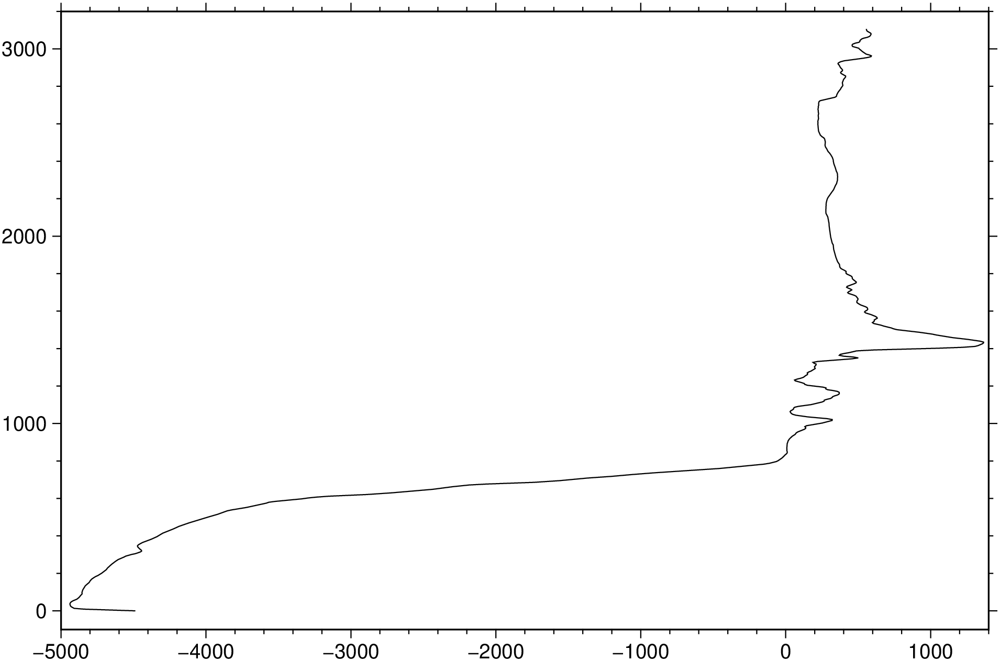
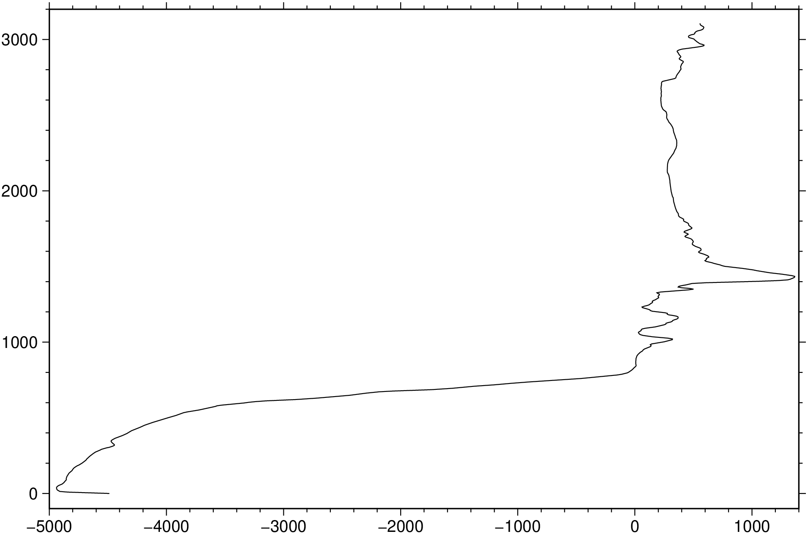

using GMT
resetGMT() # hide
D = grdtrack("@earth_relief_05m", region=(0,20,0,20), profile="BL/TR+d", o="3,2")
imshow(D)
Sample grids at specified (x,y) locations
Reads one or more grid files (or a Sandwell/Smith IMG files) and a table (from file or standard input; but see profile for exception) with (x,y) [or (lon,lat)] positions in the first two columns (more columns may be present). It interpolates the grid(s) at the positions in the table and writes out the table with the interpolated values added as (one or more) new columns. Alternatively (crossprofile), the input is considered to be line-segments and we create orthogonal cross-profiles at each data point or with an equidistant separation and sample the grid(s) along these profiles. A bicubic [Default], bilinear, B-spline or nearest-neighbor (see interp) interpolation is used, requiring boundary conditions at the limits of the region (see interp; Default uses “natural” conditions (second partial derivative normal to edge is zero) unless the grid is automatically recognized as periodic.)
table
One or more data tables holding the (x,y) positions where the user wants to sample the 2-D data set. Mandatory except if profile option is used.
G or grid : – grid=GMTgrid | grid=gridfile
GMTgrid (a grid type) or gridfile is a 2-D binary grid file with the function f(x,y). If the specified grid is in Sandwell/Smith Mercator format you must append a comma-separated list of arguments that includes a scale to multiply the data (usually 1 or 0.1), the mode which stand for the following: (0) Img files with no constraint code, returns data at all points, (1) Img file with constraints coded, return data at all points, (2) Img file with constraints coded, return data only at constrained points and NaN elsewhere, and (3) Img file with constraints coded, return 1 at constraints and 0 elsewhere, and optionally the max latitude in the IMG file [80.738]. You may repeat grid as many times as you have grids you wish to sample. Alternatively, use -G+l list to pass a file whose first word in the trailing text record will be extracted as the file names. The grids are sampled and results are output in the order given. Note: If gridfile is a remote global grid and no registration is specified then grdtrack will default to gridline registration (instead of the default pixel registration) to ensure all input points are inside the grid.
A or interp_path or resample : – interp_path=[f|p|m|r|R][+l]
For track resampling (if crossprofile or profile are set) we can select how this is to be performed. Append f to keep original points, but add intermediate points if needed [Default], m as f, but first follow meridian (along y) then parallel (along x), p as f, but first follow parallel (along y) then meridian (along x), r to resample at equidistant locations; input points are not necessarily included in the output, and R as r, but adjust given spacing to fit the track length exactly. Finally, append +l if geographic distances should be measured along rhumb lines (loxodromes) instead of great circles. Ignored unless crossprofile is used.
C or crossprofile : – crossprofile=length/ds[/spacing][+a|v][d|f value][l|r]
Use input line segments to create an equidistant and (optionally) equally-spaced set of crossing profiles along which we sample the grid(s) [Default simply samples the grid(s) at the input locations]. Specify two length scales that control how the sampling is done: length* sets the full length of each cross-profile, while ds is the sampling spacing along each cross-profile. Optionally, append / spacing for an equidistant spacing between cross-profiles [Default erects cross-profiles at the input coordinates]; see interp_path for how resampling the input track is controlled. By default, all cross-profiles have the same direction (left to right as we look in the direction of the input line segment). Append +a to alternate the direction of cross-profiles, or v to enforce either a “west-to-east” or “south-to-north” view. By default the entire profiles are output. Choose to only output the left or right halves of the profiles by appending +l or +r, respectively. Append suitable units to length; it sets the unit used for ds (and spacing) (See Units below). The default unit for geographic grids is meter while Cartesian grids implies the user unit. The output columns will be lon, lat, dist, azimuth, z1, z2, …, zn (The zi are the sampled values for each of the n grids). Use +d to change the profiles from being orthogonal to the line by the given deviation [0]. Looking in the direction of the line, a positive deviation will rotate the crosslines clockwise and a negative one will rotate them counter-clockwise. Finally, you can use +f to set a fixed azimuth for all profiles.
D or dfile : – dfile=fname
In concert with crossprofile we can save the (possibly resampled) original lines to the file fname [Default only saves/returns the cross-profiles]. The columns will be lon, lat, dist, azimuth, z1, z2, … (sampled value for each grid)
E or profile : – profile=line [, line,…][+a az][+c][+d][+g][+i inc][+l length][+n np][+o az][+r radius]
Instead of reading input track coordinates, specify profiles via coordinates and modifiers. The format of each line is start/stop, where start or stop are either lon/lat (x/y for Cartesian data) or a 2-character XY key that uses the text-style justification format to specify a point on the map as [LCR][BMT]. Each line will be a separate segment unless +c is used which will connect segments with shared joints into a single segment. In addition to line coordinates, you can use Z-, Z+ to mean the global minimum and maximum locations in the grid (only available if a single grid is given via grid). You may append +i inc to set the sampling interval; if not given then we default to half the minimum grid interval. For a line along parallels or meridians you can add +g to report degrees of longitude or latitude instead of great circle distances starting at zero. Instead of two coordinates you can specify an origin and one of +a, +o, or +r. The +a sets the azimuth of a profile of given length starting at the given origin, while +o centers the profile on the origin; both require +l. For circular sampling specify +r to define a circle of given radius centered on the origin; this option requires either +n or +i. The +n np modifier sets the desired number of points, while +l length gives the total length of the profile. Append +d to output the along-track distances after the coordinates. Note: No track file will be read. Also note that only one distance unit can be chosen. Giving different units will result in an error. If no units are specified we default to great circle distances in km (if geographic). If working with geographic data you can use -j to control distance calculation mode [Great Circle]. Note: If crossprofile is set and spacing is given the that sampling scheme overrules any modifier set in profile.
F or critical : – critical=[+b][+n][+r][+z z0]
Find critical points along each cross-profile as a function of along-track distance. Requires crossprofile and a single input grid (z). We examine each cross-profile generated and report (dist, lonc, latc, distc, azimuthc, zc) at the center peak of maximum z value, (lonl, latl, distl) and (lonr, latr, distr) at the first and last non-NaN point whose z-value exceeds z0, respectively, and the width based on the two extreme points found. Here, dist is the distance along the original input trackfile and the other 12 output columns are a function of that distance. When searching for the center peak and the extreme first and last values that exceed the threshold we assume the profile is positive up. If we instead are looking for a trough then you must use +n to temporarily flip the profile to positive. The threshold z0 value is always given as >= 0; use +z to change it [0]. Alternatively, use +b to determine the balance point and standard deviation of the profile; this is the weighted mean and weighted standard deviation of the distances, with z acting as the weight. Finally, use +r to obtain the weighted rms about the cross-track center (distc == 0). Note: We round the exact results to the nearest distance nodes along the cross-profiles. We write 13 output columns per track: dist, lonc, latc, distc, azimuthc, zc, lonl, latl, distl, lonr, latr, distr, width.
N or no_skip or noskip : – no_skip=true
Do not skip points that fall outside the domain of the grid(s) [Default only output points within grid domain].
R or region or limits : – limits=(xmin, xmax, ymin, ymax) | limits=(BB=(xmin, xmax, ymin, ymax),) | limits=(LLUR=(xmin, xmax, ymin, ymax),units=“unit”) | …more
Specify the region of interest. More at limits. For perspective view view, optionally add zmin,zmax. This option may be used to indicate the range used for the 3-D axes. You may ask for a larger w/e/s/n region to have more room between the image and the axes.
S or stack : – stack=method/modifiers
In conjunction with crossprofile, compute a single stacked profile from all profiles across each segment. Append how stacking should be computed: a = mean (average), m = median, p = mode (maximum likelihood), l = lower, L = lower but only consider positive values, u = upper, U = upper but only consider negative values [a]. The modifiers control the output; choose one or more among these choices: +a : Append stacked values to all cross-profiles. +d : Append stack deviations to all cross-profiles. +r : Append data residuals (data - stack) to all cross-profiles. +s [file] : Save stacked profile to file [grdtrack_stacked_profile.txt]. +c fact : Compute envelope on stacked profile as ± fact * deviation [2]. Notes: (1) Deviations depend on method and are st.dev (a), L1 scale, i.e., 1.4826 * median absolute deviation (MAD) (for m and p), or half-range (upper-lower)/2. (2) The stacked profile file contains a leading column plus groups of 4-6 columns, with one group for each sampled grid. The leading column holds cross distance, while the first four columns in a group hold stacked value, deviation, min value, and max value, respectively. If method is one of a| m| p then we also write the lower and upper confidence bounds (see +c). When one or more of +a, +d, and +r are used then we also append the stacking results to the end of each row, for all cross-profiles. The order is always stacked value (+a), followed by deviations (+d) and finally residuals (+r). When more than one grid is sampled this sequence of 1-3 columns is repeated for each grid.
T or radius : – radius= [radius][+e|p]
To be used with normal grid sampling, and limited to a single, non-IMG grid. If the nearest node to the input point is NaN, search outwards until we find the nearest non-NaN node and report that value instead. Optionally specify a search radius which limits the consideration to points within this distance from the input point. To report the location of the nearest node and its distance from the input point, append +e. The default unit for geographic grid distances is spherical degrees. Use radius to change the unit and give radius = 0 if you do not want to limit the radius search. To instead replace the input point with the coordinates of the nearest node, append +p.
V or verbose : – verbose=true | verbose=level
Select verbosity level. More at verbose
Z or z_only : – z_only=true
Only write out the sampled z-values [Default writes all columns]. Note: If used in conjunction with -s then the default column becomes 0 instead of 2. If specifying specific columns in -s then start numbering the z-columns from 0 instead of 2.
a or aspatial : – aspatial=??
Control how aspatial data are handled in GMT during input and output. More at
bi or binary_in : – binary_in=??
Select native binary format for primary table input. More at
bo or binary_out : – binary_out=??
Select native binary format for table output. More at
di or nodata_in : – nodata_in=??
Substitute specific values with NaN. More at
e or pattern : – pattern=??
Only accept ASCII data records that contain the specified pattern. More at
f or colinfo : – colinfo=??
Specify the data types of input and/or output columns (time or geographical data). More at
g or gap : – gap=??
Examine the spacing between consecutive data points in order to impose breaks in the line. More at
h or header : – header=??
Specify that input and/or output file(s) have n header records. More at
i or incol or incols : – incol=col_num | incol=“opts”
Select input columns and transformations (0 is first column, t is trailing text, append word to read one word only). More at incol
j or metric or spherical_dist or spherical : – metric=greatcirc or spherical=:flat or spherical=:ellipsoidal
Determine how spherical distances are calculated in modules that support this [Default is spherical=:greatcirc]. GMT has different ways to compute distances on planetary bodies:
spherical=:greatcirc to perform great circle distance calculations, with parameters such as distance increments or radii compared against calculated great circle distances [Default is spherical=:greatcirc].
spherical=:flat to select Flat Earth mode, which gives a more approximate but faster result.
spherical=:ellipsoidal to select ellipsoidal (or geodesic) mode for the highest precision and slowest calculation time.
Note: All spherical distance calculations depend on the current ellipsoid (PROJ_ELLIPSOID), the definition of the mean radius (PROJ_MEAN_RADIUS), and the specification of latitude type (PROJ_AUX_LATITUDE). Geodesic distance calculations is also controlled by method (PROJ_GEODESIC).
n or interp or interpol : – interp=params
Select interpolation mode for grids. More at interp
o or outcol : – outcol=??
Select specific data columns for primary output, in arbitrary order. More at
q or inrows : – inrows=??
Select specific data rows to be read and/or written. More at
s or skiprows or skip_NaN : – skip_NaN=true | skip_NaN=“<cols[+a][+r]>”
Suppress output of data records whose z-value(s) equal NaN. More at
w or wrap or cyclic : – wrap=??
Convert input records to a cyclical coordinate. More at
yx : – yx=true
Swap 1st and 2nd column on input and/or output. More at
Units
For map distance unit, append unit d for arc degree, m for arc minute, and s for arc second, or e for meter [Default unless stated otherwise], f for foot, k for km, M for statute mile, n for nautical mile, and u for US survey foot. By default we compute such distances using a spherical approximation with great circles (-jg) using the authalic radius (see PROJ_MEAN_RADIUS). You can use -jf to perform “Flat Earth” calculations (quicker but less accurate) or -je to perform exact geodesic calculations (slower but more accurate; see PROJ_GEODESIC for method used).
.. include:: explain_grdresample2.rst_
If an interpolation point is not on a node of the input grid, then a NaN at any node in the neighborhood surrounding the point will yield an interpolated NaN. Bicubic interpolation [default] yields continuous first derivatives but requires a neighborhood of 4 nodes by 4 nodes. Bilinear interpolation [interp] uses only a 2 by 2 neighborhood, but yields only zeroth-order continuity. Use bicubic when smoothness is important. Use bilinear to minimize the propagation of NaNs, or lower threshold.
To extract a profile along a great circle between (0,0) to (20,20) from the remote grid earth_relief_05m, and only write out (dist, topo) records, try

To sample the file hawaii_topo.nc along the SEASAT track track_4.xyg (An ASCII table containing longitude, latitude, and SEASAT-derived gravity, preceded by one header record)
To sample the Sandwell/Smith IMG format file grav.18.1.img (1 minute free-air anomalies on a Mercator grid) along 100-km-long cross-profiles that are orthogonal to the line segment given in the file track.xy, erecting cross-profiles every 25 km and sampling the grid every 3 km, try
The same thing, but now determining the central anomaly location along track, with a threshold of 25 mGal, try
To sample the grid data.nc along a line from the lower left to the upper right corner, using a grid spacing of 1 km on the geodesic, and output distances as well, try
This function has multiple methods:
grdtrack(cmd0::String; ...) - grdtrack.jl:12grdtrack(; ...) - grdtrack.jl:12grdtrack(cmd0::String, arg1; ...) - grdtrack.jl:12grdtrack(arg1, arg2; kw...) - grdtrack.jl:106grdtrack(arg1; ...) - grdtrack.jl:106grdtrack(cmd0::String, arg1, arg2; kwargs...) - grdtrack.jl:12